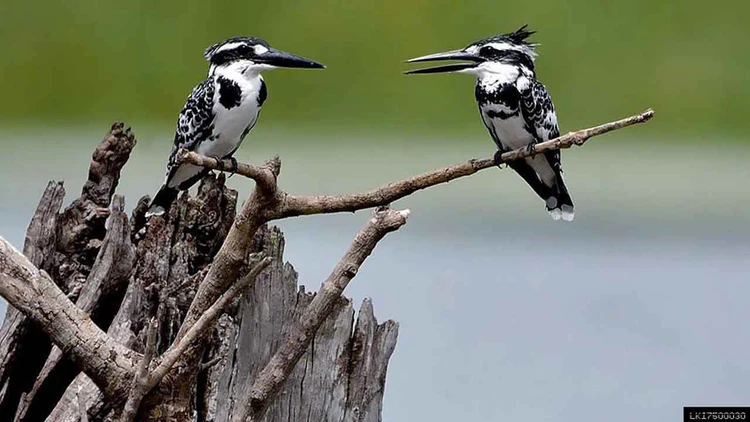

Curated Travel Experiences
Choose a popular package below, or let us design your own custom journey.
 Family Fun
Family Fun
Family Week of Wonders
A perfect mix of culture and fun for adults and kids. Visit the Temple of the Tooth and hike Little Adam's Peak.

Nature & Birding
Wings of Paradise
A specialized tour for nature lovers. Explore the Anawilundawa Sanctuary and Wilpattu National Park.
 History & Culture
History & Culture
Northbound Discovery
Go off the beaten path. Discover the colorful Nallur Kovil, wild donkeys of Mannar, and Trincomalee.
 Sun & Sand
Sun & Sand
Beach Bliss
The ultimate coastal loop. Relax on the calm sands of Pasikuda and surf in Arugam Bay.
 Grand Tour
Grand Tour
Fortnight in Paradise
The complete Sri Lankan experience. Visit the Vedda tribe, and take the famous train ride to Ella.
 Best Seller
Best Seller
Classic Hill Country
Experience the misty mountains and tea plantations. Visit the Herbal Gardens and majestic waterfalls.